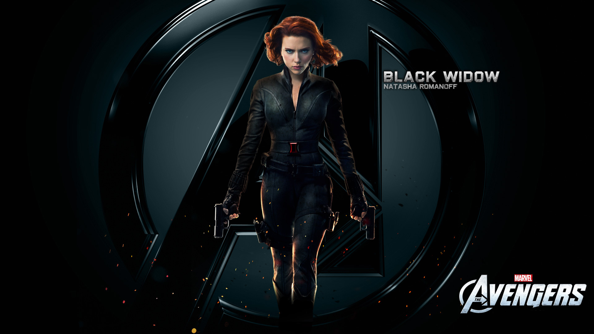

Black Widow is one of the most skilled and intelligent members of the Avengers. Unlike many superheroes, she has no superhuman powers. Her strength lies in her intelligence, combat skills, and determination.
Natasha Romanoff was trained from a young age in the Red Room program. She was taught espionage, martial arts, and tactical combat. Her childhood was difficult, but it shaped her into a fearless and disciplined fighter.
Through intense training and missions, Natasha earned the title of Black Widow. Though she was once involved in dangerous operations, she chose a new path to fight for justice and protect innocent lives.
Black Widow uses advanced weapons and gadgets, including her signature Widow’s Bite, batons, and tactical suits. She combines technology with skill to defeat powerful enemies.
Black Widow is a founding member of the Avengers. She plays a crucial role in intelligence gathering and combat missions. Her calm thinking and experience help the team make strategic decisions.
Natasha is brave, loyal, and selfless. She believes in redemption and constantly tries to make the world better. Her emotional strength is as powerful as her physical skills.
Black Widow proves that heroism does not require superpowers. Her courage, sacrifice, and dedication inspire others to stand up and fight for what is right.
⬅ Back to Home